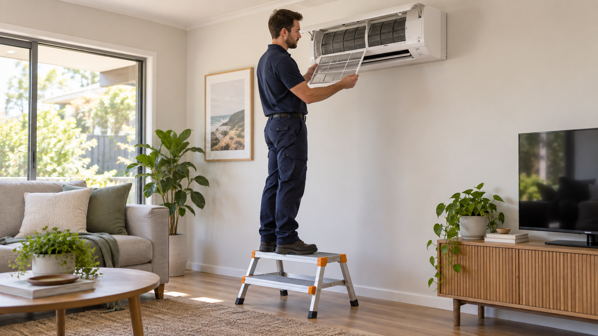

Interior
Aircon Installation
Air conditioning help can cover a new split or ducted system, a poorly performing unit, servicing needs or replacement advice for a home or managed property.
Explore serviceEssential systems
Help with the essential systems that keep a property safe, comfortable and working as intended.
Describe your request
Service directory
Each option opens a focused page with useful scoping details. If the wording is unfamiliar, use the contact route and Ellis can help confirm the right pathway.
Interior
Air conditioning help can cover a new split or ducted system, a poorly performing unit, servicing needs or replacement advice for a home or managed property.
Explore serviceInterior
Electrical services cover faults, fittings, power points, lighting, switchboards and electrical work associated with renovations or appliances.
Explore serviceInterior
Insulation enquiries can cover roof, ceiling, wall or underfloor upgrades, missing sections and comfort or energy-performance concerns.
Explore serviceInterior
Plumbing services can address leaks, blocked fixtures, taps, toilets, pipework and water connections associated with repairs or upgrades.
Explore serviceMore
Air conditioning help can cover a new split or ducted system, a poorly performing unit, servicing needs or replacement advice for a home or managed property.
Explore serviceMore
Gas-fitting services cover appliance connections, gas leaks, pipework and alterations that require controlled testing and compliant work.
Explore serviceCommon enquiries
Seven Perth-area entry points
Ellis reviews requests within the Perth metropolitan area. A regional page is a starting point only; the specific suburb, postcode, service and availability still require confirmation.
From request to confirmation
Perth suburb or postcode, property type and where the issue is located.
What you can safely observe, when it started and any access limits.
Your preferred window, without relying on an instant or emergency response.
Service questions
No. This page starts an enquiry. Scope, availability and the attending provider are confirmed separately.
Availability varies by location, timing and the type of work. Include your suburb or postcode for confirmation.
Depending on the request, delivery may be by an Ellis team member or a reviewed service partner. The attending provider is identified during confirmation.
Start with one request
Share the task and location. Ellis will confirm the appropriate next step and who would attend.